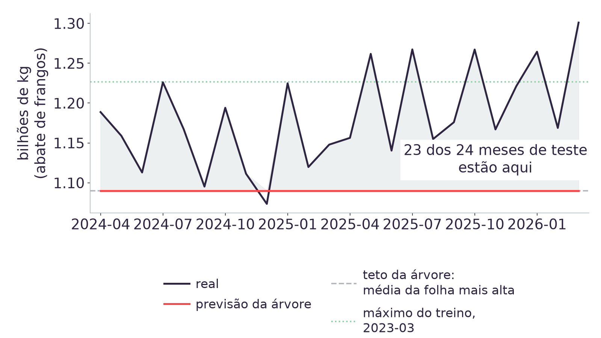
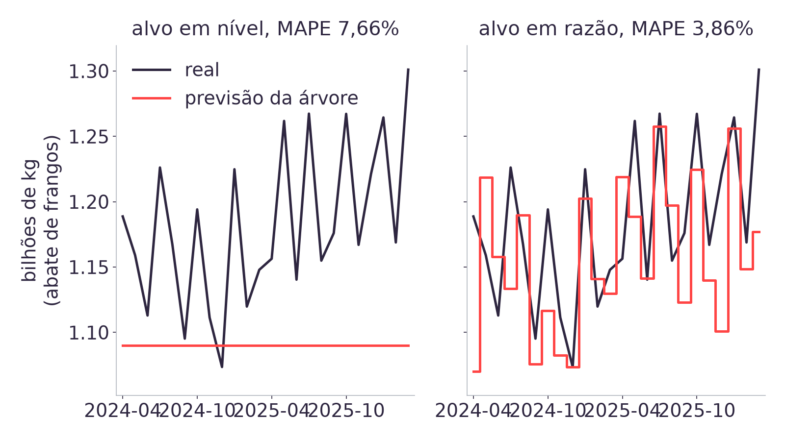

Módulo 03 IN · Aula 07 · 04/09/2026
Autoestudo na Adalove: Árvore de Decisão e Entropia, Árvore de Decisão na prática, Random Forest, Matriz de confusão, precisão e revocação, Regressão Logística e SVM - Support Vector Machine [7].
Daily. Cada dupla relata os perfis de trimestre encontrados no agrupamento da Aula 06.
Quatro hipóteses sobre a granularidade do case, a árvore de decisão, o Random Forest e o KNN, testadas com os números medidos da própria base do TAPI.
A aula segue por hipóteses testadas: cada bloco declara uma afirmação sobre o Modelo 1 do TAPI e mede se ela é verdadeira ou falsa contra o teste de 24 meses. A técnica nova de hoje, sem cálculo de entropia à mão, é a árvore de decisão; Random Forest e KNN entram como comparação.
Módulo 03 IN · Aula 07 · Sprint 3
2
A Aula 06 deixou pronto os quatro perfis de trimestre do calendário agrupados por K-means (K=4) sobre a participação de cada série no total do ano, e o ambiente de cada dupla com o modelo da Aula 05 reproduzido.
A Aula 05 treinou uma regressão linear para o abate de frangos e mediu MAPE de 1,60% contra 1,69% da baseline, sobre um corte por trimestre. Hoje o mesmo problema volta em base mensal, com um horizonte de teste maior (24 meses), e a pergunta muda: um modelo mais complexo que a reta ganha dessa baseline?
Pergunta disparada: o que uma árvore de decisão captura que uma reta não captura?
Módulo 03 IN · Aula 07 · Sprint 3
3
Hipótese 1: "a granularidade do case é trimestral porque a fonte só tem trimestre." As cinco tabelas do SIDRA que sustentam o case (1092, 1093, 1094, 7524 e 1086) têm uma classificação chamada c12716, "Referência temporal", com quatro categorias [1]:
| Categoria de c12716 | O que ela entrega |
|---|---|
| Total do trimestre | O valor agregado dos três meses |
| No 1º mês | O valor só daquele mês |
| No 2º mês | O valor só daquele mês |
| No 3º mês | O valor só daquele mês |
A construção do acervo pedia a série sem declarar essa classificação, e o filtro caía sozinho em "Total do trimestre", em silêncio.
Módulo 03 IN · Aula 07 · Sprint 3
4
Pedir as quatro categorias de c12716, em vez de aceitar o filtro que caía em "Total", devolve 351 meses por série, de 1997-01 a 2026-03, contra os 117 trimestres que o acervo usava até a Aula 06 [1].
| Leitura antiga (implícita) | Leitura completa de c12716 | |
|---|---|---|
| Unidade | Trimestre | Mês |
| Linhas por série | 117 | 351 |
| Início | 1997-T1 | 1997-01 |
Não era um limite da fonte: era uma leitura incompleta dela. O horizonte de 24 meses que o TAPI pede deixa de precisar de tradução, porque agora existe em mês de verdade.
Módulo 03 IN · Aula 07 · Sprint 3
5
Checagem de sanidade antes de confiar na série mensal: somar os três meses de cada trimestre e comparar com o valor de "Total do trimestre" da mesma classificação.
| Série | Unidade | Soma dos meses bate com o trimestre |
|---|---|---|
| Abate de bovinos, suínos e frangos | Cabeças | Exatamente, em 100% dos trimestres |
| Produção de ovos | Mil dúzias | Diverge 1 unidade em 59 de 157 trimestres |
| Produção de leite | Mil litros | Diverge 1 unidade em 39 de 117 trimestres |
A divergência de ovos e leite vem do arredondamento: o IBGE arredonda cada mês separadamente, e a soma de três arredondamentos nem sempre bate com o arredondamento do total.
Pergunta para a sala: o que mais a gente aceitou como limite do dado sem ter lido a fonte inteira?
Módulo 03 IN · Aula 07 · Sprint 3
6
Junção interna das cinco séries mensais de dados/mensal/ pela coluna
periodo, com as colunas de defasagem lag1 a lag12 e
a sazonalidade codificada em sen e cos, o mesmo desenho da Aula
04. O modelo de hoje usa quatro features: lag1, lag12,
sen e cos.
dados/mensal/ pela coluna
periodo e criar lag1, lag2, lag3,
lag12, sen e cos.dropna(), que descarta os meses sem defasagem completa, e
conferir que restam 339 linhas, de 1998-01 a 2026-03
[2].abate_frangos com o valor da mesma série trimestral, como na checagem do
slide anterior.Módulo 03 IN · Aula 07 · Sprint 3
7
| Conjunto | Linhas | Intervalo |
|---|---|---|
| Treino | 315 meses | 1998-01 a 2024-03 |
| Teste | 24 meses | 2024-04 a 2026-03 |
O corte é por data, como na Aula 05: um sorteio de linhas deixaria trimestres futuros no treino e mediria interpolação, quando o que a LDC precisa é a extrapolação para meses ainda não vistos.
Vinte e quatro meses de teste é o mesmo horizonte do TAPI, agora expresso em mês, a unidade que o parceiro pediu desde o início.
Módulo 03 IN · Aula 07 · Sprint 3
8
Uma árvore de regressão faz uma sequência de perguntas binárias sobre as features
(lag1 <= x?, lag12 <= y?) e, a cada resposta, divide os
dados de treino em dois grupos cada vez menores. Cada divisão busca o ponto de corte que
mais reduz o erro dentro dos dois grupos resultantes.
No fim de cada ramo existe uma folha: um subconjunto de linhas de treino. A previsão da árvore para qualquer entrada nova é a média do alvo dentro da folha em que essa entrada cai. O cálculo de entropia passo a passo, que decide onde cada corte acontece, está no autoestudo de hoje [7] e no material de apoio, que explica a árvore nó a nó [5]; a aula foca no que a árvore produz.
Módulo 03 IN · Aula 07 · Sprint 3
9
from sklearn.tree import (
DecisionTreeRegressor
)
arvore = DecisionTreeRegressor(
max_depth=3,
random_state=42
)
arvore.fit(X_treino, y_treino)
arvore.get_n_leaves() # 8DecisionTreeRegressor [3] recebe max_depth, que limita
quantas perguntas seguidas a árvore pode fazer antes de parar num nó folha. Com
profundidade 3, o número máximo de folhas é 23 = 8, e a árvore treinada
nesta base usa exatamente esse teto.
Uma árvore mais profunda teria mais folhas, cada uma com menos linhas de treino, e
se ajustaria mais ao ruído do próprio treino. random_state=42 fixa o
desempate quando dois cortes reduzem o erro igualmente.
Módulo 03 IN · Aula 07 · Sprint 3
10
DecisionTreeRegressor(max_depth=3, random_state=42) sobre
X_treino, y_treino.X_teste e calcular RMSE e MAPE, com a mesma função da Aula
05.Módulo 03 IN · Aula 07 · Sprint 3
11
Hipótese 2: "a árvore captura o que a reta não captura, logo ganha." Antes de testar qualquer modelo novo, as três baselines medidas nos 24 meses de teste:
| Baseline | RMSE | MAPE |
|---|---|---|
| A. Repete o mês anterior | 88.925.206 | 6,73% |
| B. Repete o mesmo mês do ano anterior | 75.627.562 | 5,10% |
| C. Coeficiente fixo da LDC | 54.523.588 | 3,71% |
C é a baseline que a própria LDC usa hoje. Bater 3,71% de MAPE é a barra que qualquer modelo treinado precisa passar para justificar a complexidade extra.
Módulo 03 IN · Aula 07 · Sprint 3
12
| Modelo | RMSE | MAPE |
|---|---|---|
| Regressão linear | 63.225.293 | 4,25% |
| Random Forest, 300 árvores | 82.070.325 | 5,35% |
| KNN k=5, padronizado | 128.029.380 | 9,37% |
| KNN k=5, sem padronizar | 83.496.528 | 5,62% |
Os quatro perdem para a baseline C. A regressão linear chega mais perto (4,25%), mas nenhum dos quatro bate 3,71%. A árvore ainda falta entrar na tabela.
Módulo 03 IN · Aula 07 · Sprint 3
13
| Modelo | RMSE | MAPE |
|---|---|---|
| Baseline C | 54.523.588 | 3,71% |
| Regressão linear | 63.225.293 | 4,25% |
| Baseline B | 75.627.562 | 5,10% |
| Random Forest | 82.070.325 | 5,35% |
| KNN sem padronizar | 83.496.528 | 5,62% |
| Baseline A | 88.925.206 | 6,73% |
| Árvore de decisão, max_depth=3 | 109.534.336 | 7,66% |
| KNN padronizado | 128.029.380 | 9,37% |
A hipótese 2 é falsa: entre os oito, a árvore só não perde do KNN padronizado. O próximo bloco mede por quê.
Módulo 03 IN · Aula 07 · Sprint 3
14
Hipótese 3: "a árvore perde porque não extrapola tendência." A árvore tem 8 folhas, mas os 24 meses de teste (2024-04 a 2026-03) caem todos na mesma folha. O resultado é um único valor previsto, do primeiro ao último mês do teste.

Módulo 03 IN · Aula 07 · Sprint 3
15
| Medida | Valor |
|---|---|
| Valor único previsto pela árvore, nos 24 meses | 1.090.166.234 kg |
| Distância desse valor até a média real do teste | 7,77% abaixo |
| Meses de teste acima desse valor | 23 de 24 |
| Máximo do alvo no treino (2023-03) | 1.226.709.256 kg |
| Máximo real no teste (2026-03) | 1.301.022.625 kg |
| Meses de teste acima do máximo do treino | 5 de 24 |
Verificação de uma linha, para conferir na própria máquina:
arvore.predict(X_teste).max().
Módulo 03 IN · Aula 07 · Sprint 3
16
A árvore prevê a média da folha em que a entrada cai. A maior previsão possível é a média da folha com os valores mais altos do treino, e isso é um teto fixo: nenhuma combinação de features leva a árvore a prever acima dele. Numa série com tendência de alta, como o abate de frangos, o futuro tende a ficar acima desse teto. A regressão linear não tem esse limite, porque soma coeficientes a uma entrada que pode crescer sem parar.
arvore.predict(X_teste).max() e comparar com
y_teste.mean().y_teste ficam acima desse valor máximo.Módulo 03 IN · Aula 07 · Sprint 3
17
KNN não ajusta coeficiente nem faz pergunta binária: para cada mês novo, procura os
k meses de treino mais parecidos (menor distância euclidiana entre as
features) e prevê a média do alvo desses k vizinhos.
A decisão inteira depende do que "parecido" significa, e quem responde isso é a escala de cada feature: uma feature com desvio muito maior domina a distância, mesmo que não seja a mais relevante para prever o alvo.
Módulo 03 IN · Aula 07 · Sprint 3
18
| Feature | Desvio padrão, sem padronizar | Participação na distância |
|---|---|---|
lag1 | ≈ 2,45e8 | 49,2775% |
lag12 | ≈ 2,485e8 | 50,7225% |
sen | ≈ 0,71 | 0,0000% |
cos | ≈ 0,71 | 0,0000% |
Sem padronizar, o "mais parecido" que o KNN encontra é o mês com volume de produção
mais próximo, porque lag1 e lag12 estão em escala de centenas de
milhões e dominam a distância. sen e cos variam entre -1 e 1 e,
nessa escala, não pesam nada.
Módulo 03 IN · Aula 07 · Sprint 3
19
| k | MAPE, padronizado | MAPE, sem padronizar |
|---|---|---|
| 3 | 8,14% | 5,82% |
| 5 | 9,37% | 5,62% |
| 10 | 10,09% | 6,10% |
Padronizar dá peso igual a sen, cos, lag1 e
lag12 na distância, e isso força o KNN a buscar o mês mais parecido em
posição no calendário. Para uma série de proteína animal, volume é a semelhança certa.
Módulo 03 IN · Aula 07 · Sprint 3
20
A regra da Aula 05 não muda: padronizar iguala a influência das features na distância, e isso é o comportamento certo quando não existe informação prévia sobre qual feature deveria valer mais. O resultado desta seção mostra o caso em que essa condição deixa de valer: aqui já se sabe, de antemão, que volume de produção é a semelhança que importa, e igualar tudo apaga exatamente essa informação.
Pergunta para a sala: antes de rodar qualquer modelo, quando dá para saber que uma feature deve pesar mais que as outras numa distância?
Módulo 03 IN · Aula 07 · Sprint 3
21
Hipótese 4: "trocar o alvo para razão devolve a árvore à disputa." Em
vez de prever abate_frangos diretamente, o alvo passa a ser
abate_frangos / lag12, uma razão estacionária: ela não cresce ao longo do
tempo do mesmo jeito que a série em nível. A previsão final volta a quilogramas
multiplicando o resultado de volta por lag12.

Módulo 03 IN · Aula 07 · Sprint 3
22
| Modelo | MAPE, alvo em nível | MAPE, alvo em razão |
|---|---|---|
| Árvore, max_depth=3 | 7,66% | 3,86% |
| Random Forest | 5,35% | 4,48% |
| KNN k=5, padronizado | 9,37% | 4,59% |
| KNN k=5, sem padronizar | 5,62% | 3,71% |
Os quatro modelos melhoram com o alvo em razão, e a árvore é quem ganha mais: o teto fixo em nível deixa de existir, porque a árvore agora prevê uma razão pequena e estável, em vez de um volume que só cresce.
Módulo 03 IN · Aula 07 · Sprint 3
23
| Modelo | MAPE, alvo em nível | MAPE, alvo em razão |
|---|---|---|
| Regressão linear (4 features) | 4,25% | 4,73% |
A reta já extrapolava tendência sozinha, via os coeficientes de lag1 e
lag12. Trocar o alvo para razão tira dela justamente a informação de nível que
ela sabia usar, e o erro sobe. Isso impede a leitura de que alvo em razão é sempre melhor:
depende de o modelo já saber, ou não, lidar com tendência.
Módulo 03 IN · Aula 07 · Sprint 3
24
RandomForestRegressor(n_estimators=300, random_state=42) sobre
X_treino, y_treino com o alvo em razão.X_teste, converter a previsão de volta para nível
(multiplicar por lag12) e calcular RMSE e MAPE.Módulo 03 IN · Aula 07 · Sprint 3
25
Random Forest [4] treina muitas árvores independentes, cada uma sobre uma amostra diferente das linhas e das features, e prevê a média das 300 árvores. Cada árvore erra de um jeito um pouco diferente, e a média cancela parte desses erros, reduzindo a variância em relação a uma única árvore.
| Random Forest, 300 árvores | MAPE, alvo em nível | MAPE, alvo em razão |
|---|---|---|
| 5,35% | 4,48% |
Melhor que a árvore sozinha nos dois casos, mas cada árvore da floresta ainda prevê a média de uma folha: a média de 300 tetos continua sendo um teto, só que mais suave.
Módulo 03 IN · Aula 07 · Sprint 3
26
Regressão linear sobre a razão, com onze features: lag1, lag2,
lag3, lag12, sen, cos,
dias, mais as quatro séries do case defasadas em um mês.
| Modelo | RMSE | MAPE |
|---|---|---|
| Baseline C, coeficiente fixo da LDC | 54.523.588 | 3,71% |
| Fecho: regressão linear, razão, 11 features | 46.724.434 | 3,32% |
É o único modelo do encontro que bate a baseline. O vencedor não é o modelo mais novo que a turma aprendeu hoje: é a reta, com o alvo e as features certas.
Módulo 03 IN · Aula 07 · Sprint 3
27
A árvore de decisão prevê o mesmo valor, 1.090.166.234 kg, nos 24 meses de teste. Por que ela faz isso?
Módulo 03 IN · Aula 07 · Sprint 3
28
Padronizar as features piora o KNN desta aula em todo k testado. Por quê?
Módulo 03 IN · Aula 07 · Sprint 3
29
| Hipótese | Veredito | Evidência | |
|---|---|---|---|
| H1 | A granularidade é imposta pela fonte | Falsa | c12716 entrega 351 meses por série |
| H2 | A árvore ganha da reta | Falsa | 7,66% contra 4,25% e 3,71% |
| H3 | A árvore perde por não extrapolar | Verdadeira | Um único valor nos 24 meses, 23 acima dele |
| H4 | Alvo em razão recupera a árvore | Verdadeira | 7,66% cai para 3,86% |
ART. 6 Preparação dos Dados e Modelagem, peso 6, fecha na Sprint 3, com review em 11/09 [6]. Cada dupla entrega este quadro preenchido com a própria série, junto com o modelo treinado e a comparação contra a baseline.
Módulo 03 IN · Aula 07 · Sprint 3
30
A Aula 07 não toca em matriz de confusão, precisão, revocação, Naive Bayes, regressão logística nem SVM, mesmo esses temas fazendo parte do autoestudo desta semana [7]. O case é de regressão, e classificar um mês como "alta" ou "baixa" exigiria inventar um rótulo que o dado não tem. Esses assuntos entram na Aula 09.
Para a Aula 08, o autoestudo na Adalove é sobre sistemas de recomendação [8]:
| Implementação: Sistemas de Recomendação I |
| Kaggle: Sistemas de Recomendação II |
| Sistemas de Recomendação |
| Tipos de Sistemas de Recomendação |
| Ponderada 2 de Computação |
Módulo 03 IN · Aula 07 · Sprint 3
31
dados/mensal/ e checagem de sanidade em
dados/README.md..superpowers/sdd/2026-09-03-aula07/global-constraints.md.DecisionTreeRegressor, RandomForestRegressor,
KNeighborsRegressor e StandardScaler.PLANO_DE_ENSINO.md, seção 4 (peso 6 da ART.6 e o calendário da Sprint 3)
e seção 6, a espiral que amarra a Aula 06 à Aula 07.Módulo 03 IN · Aula 07 · Sprint 3
32
Prof. Ovidio Lopes da Cruz Netto · Módulo 03 IN · 2026-2A